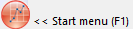

Die folgende Tabelle fasst die Origin-Ressourcen zusammen, die Ihnen zur Verfügung stehen. Sollten Sie Origin von einem lokalen Vertriebspartner erworben haben, kann Ihnen Ihr Origin-Vertriebspartner möglicherweise zusätzliche Ressourcen bieten. Bitte wenden Sie sich an diesen, um weitere Informationen hierzu zu erhalten.
|
|
Weitere Informationen zu... |
Diese Ressource finden Sie hier... |
| Technischer Support |
- Kontaktdaten für OriginLab oder Ihren lokalen Origin-Vertriebspartner Technischer Support
- Einen Bug melden
- Eine Funktion vorschlagen
|
originlab.com/Support |
| Online-Chat |
- Mit einem Mitarbeiter von OriginLab online chatten
|
originlab.com
... und klicken Sie auf  in der unteren rechten Ecke. in der unteren rechten Ecke. |
| Anwenderforum |
- Informationen mit anderen Teilnehmern der Benutzer-Community von Origin teilen und von ihnen Hilfe erhalten
|
originlab.com/Forum |
| Feedback senden |
- Über ein Webformular können Sie direkt Feedback (positiv oder negativ) geben und/oder Vorschläge zur Verbesserung von Origin machen.
|
Origin-Menü Hilfe: Feedback senden |
| Training und Beratung |
- OriginLab-Produkte optimal nutzen
- Hilfe bei der Entwicklung von benutzerdefinierten Hilfsmitteln für Ihre spezielle Applikation erhalten
|
originlab.com/Training |
|
|
Weitere Informationen zu... |
Diese Ressource finden Sie hier... |
| Lernzentrum |
- Diagramm- und Analysebeispiele laden
- Anwenderdateien beim Upgrade auf die aktuelle Version übertragen
- Lernzentrum für direkten Zugriff auf Tutorials, Videos, Origin-Blog, Benutzerforum und Seiten der sozialen Medien.
|
Hilfe: Lernzentrum (oder F11 drücken) |
| Sample-Projekte |
- Projekt für Analysebeispiele laden
(Dies ist eine Registerkarte im Lernzentrum.)
|
Datei: Beispielprojekte...
oder
Hilfe: Lernzentrum: Beispielprojekt (oder F11 drücken) |
| Hilfedateien |
- Online- oder lokale (CHM) Hilfe für Origin (GUI, Programmierung)
|
Hilfe: Hilfedateien erhalten/Nach Updates suchen (zur Aktualisierung der Hilfedateien) |
| Kontextabhängige Hilfe |
- Erläuterung der einzelnen Bedienelement in Origin-Dialogen
- Der Dialog muss geöffnet sein.
- Einige Dialoge haben mehrere Abschnitte/Registerkarten und Sie müssen möglicherweise auf den betreffenden Abschnitt bzw. die Registerkarte klicken, um den Fokus richtig zu setzen.
|
F1 drücken, wenn der Dialog geöffnet ist,
oder
auf  in der oberen rechten Ecke des Dialogs klicken in der oberen rechten Ecke des Dialogs klicken |
Startmenü
- Windows-ähnliche Suche |
- Zuletzt verwendete Dateien
- Hilfe bei Problemen oder Fragen, die während der Verwendung von Origin auftreten
- Direkter Zugriff auf Origin-Funktionen und Dialoge
- Öffnen oder Suchen von bzw. nach Apps, die für eine bestimmte Aufgabe relevant sind
- Position der Origin-Menübefehle für gesuchte Funktionen
|
F1 drücken, wenn kein Dialog geöffnet ist,
oder
auf das Symbol des Startmenü unten links im Arbeitsbereich klicken- 
Zusätzliche Informationen zur Verwendung dieser Funktion finden Sie unter
Die Origin-Oberfläche, Startmenü.
|
| Tutorials |
- Schrittweise Anweisungen zur Durchführung von vielen Origin-Operationen, von einfach bis komplex
|
Hilfe: Origin: Tutorials |
|
|
Weitere Informationen zu... |
Diese Ressource finden Sie hier... |
| Online-Dokumentation |
|
originlab.com/Doc |
| Hilfecenter |
- Installations- und Lizenzdokumentation
|
originlab.com/HelpCenter |
| Video-Tutorials |
- Hilfe bei einer Reihe von Origin-Funktionen, einschließlich "Tipps und Tricks"
- Verfügbar in Playlisten und Kategorien
- Suchen Sie unter den Origin-Videos oder auf der YouTube-Seite mit Stichwort
oder geben Sie v <key phrase> im Startmenü von Origin ein.
|
originlab.com/Videos
youtube.com/user/TheOriginlab |
| Webinare |
- Aufgezeichnete und Live-Webinare stellen Schlüsselfunktionen vor
|
originlab.com/Webinars |
| Origin Blog |
- Blogeinträge mit zahlreichen Tipps und Tricks zur Software
|
blog.originlab.com |
| Anwenderberichte |
- Verwendung von Origin in verschiedenen Arbeitsbereichen
|
originlab.com/CaseStudies |
| Grafikgalerie |
- Herausragende Beispiele von Origin-Diagrammen, viele von ihnen aus der Origin-Community
|
originlab.com/GraphGallery |